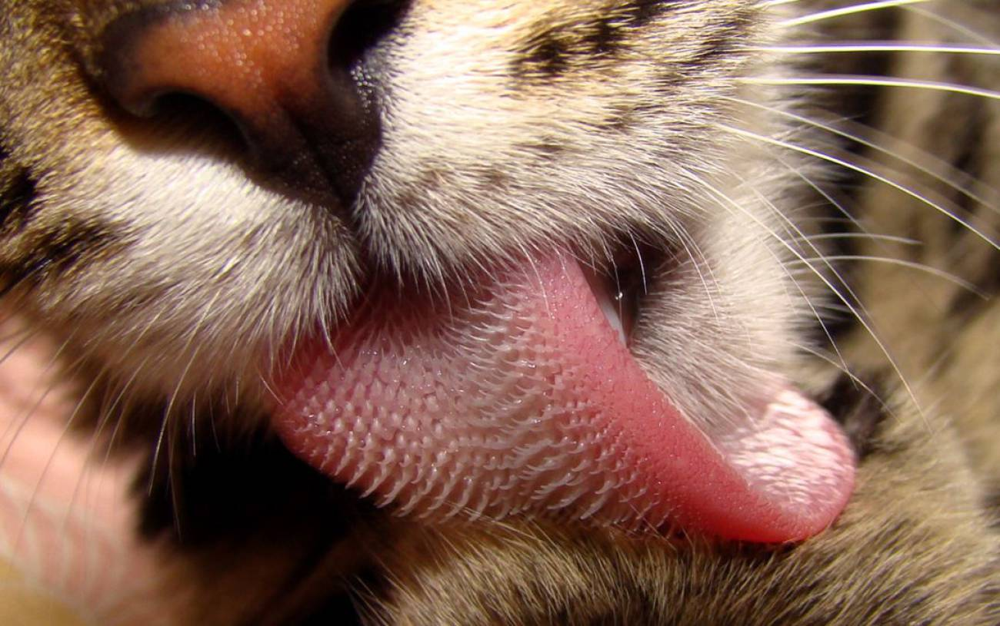

La compañia britanica Expanscape informó sobre la finalización del prototipo de su ordenador portatil, el primero del mundo con 7 pantallas plegables sobre si mismas, denominado Aurora 7, con un peso de 12 kilos, la empresa promete que lo bajara a 10.
| Aurora 7 |
Aurora 7 M3 |
|
|---|---|---|
| Pantallas |
Pantallas 2 y 3: 17,3" WLED, 3.840 x 2.160 px, 9:16, 60 Hz |
Pantallas 2 y 3: 17,3" WLED, 3.840 x 2.160 px, 9:16, 60 Hz |
| Procesador |
Intel i9 9900K, LGA 1151 |
AMD 3950x |
| Gráficos |
NVIDIA GTX 1060 Series |
NVIDIA RTX 2070 Series |
| RAM |
64 GB DDR4 2666MHz |
128 GB DDR4 2993MHz (hasta 64 GB con AMD) |
| Almacenamiento |
M.2 slot 1: 1 TB NVMe MLC SSD PCIe GEN 3.0 |
M.2 slot 1: 2 TB NVMe SSD PCIe GEN 4.0 |
| Batería |
82 Wh + 148 Wh (pantallas) |
Por determinar |
| Conectividad |
WiFi 802.11 ac, Bluetooth 4.2 |
Por determinar |
| Puertos |
3 x USB 3.1 Gen 1, 1 x HDMI, Thunderbolt opcional |
Por determinar |
| Audio/p> |
Estéreo, micrófono, minijack 3,5 mm |
|
| Dimensiones y peso |
Plegado: 51 x 34 x 11 cm |
|
| Otros |
Minipantalla, touchpad, webcam 2 MP, |
Minipantalla, touchpad, webcam 2 MP, |
| Precio |
No disponible |
No disponible |
Un gato adulto solo maúlla para comunicarse con los seres humanos.
Las gatas, generalmente, son diestras y los machos, zurdos.
A los gatos les gusta arañar objetos verticales porque les relaja, activa la circulación y tonifica su cuerpo.
La lengua de los gatos esta formada por pequeños ganchos que los ayudan a desgarrar la comida. Por eso se siente áspera al tacto.
Durante esta investigación, los científicos descubrieron que cada una de las cavidades puede almacenar hasta 4.1 microlitros (μL) de saliva, un cantidad equivalente a una décima parte de una gota de colirio. De esta manera, el gato es capaz de penetrar en el pelaje hasta llegar a la piel, lo que le permite disolver los aceites y el resto de materiales de su cuerpo para mantenerse limpio.
Para ver el resto del articulo toque la foto con el marco rojo a su derecha
Odian el agua porque su piel no les aisla bien cuando está mojada.
Son expertos en beber agua y no mojarse un pelo.
04148284415
joseleon98esteves@gmail.com